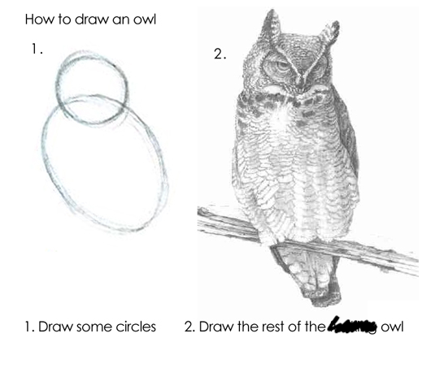

Faster R Scripts through Code Profiling
 Image credit: HackerImage website
Image credit: HackerImage website
Sources
Thomas Lumley, Github repo
useRfasteR
Hadley Wickham,
Profiling
, Advanced R
Dirk Eddelbuettel,
Rcpp
The Process for Improving Code:
(quote from Advanced R)
- Find the biggest bottleneck (the slowest part of your code).
- Try to eliminate it (you may not succeed but that’s ok).
- Repeat until your code is “fast enough.”
Easy peasy, right???

Some general guidelines for speeding up R code
- Use data frames less - they are expensive to create, often copied in whole when modified, and their rownames attribute can really slow things down.
- Be wary of using functions that copy objects in whole: c(), append(), cbind(), rbind(), or paste(). When used in loops, you can get a massive proliferation of objects in memory.
- Use vectorised functions:
- apply, lapply, sapply, vapply, tapply, mapply
- rowSums, colSums, rowMeans, colMeans, cumsum, diff
- Base functions are designed to handle wildly different input. Consider rewriting base functions for highly repetitive tasks.
- Use parallel::mclapply for parallelising functions.
- Consider an optimized matrix algebra library (beyond BLAS) for better performance (e.g. Apple vecLib BLAS , openBLAS ).
- If you work with sparse matrices, use tools for them like the package ‘Matrix’.
- For huge objects, consider storing the information in a database and accessing it with ‘dbplyr’. The packages ‘dbglm’ and ‘tidypredict’ will also do model fitting with data inside a database.
- Another solution for large objects are specialized formats like HDF5 or netCDF .
- Take advantage of the Rcpp suite of programs - not just for C/C++ programmers (e.g. RcppArmadillo::fastlm).
- Use an alternative implementation of R (e.g., fastR , pqR ).
- Check your code with benchmarking!!!
Let’s do some benchmarking!
Important: don’t (re)install ‘compiler’; you should just be able to load it in R v3.5 and later.
pck <- c("pryr","microbenchmark", "profvis", "compiler", "mnormt")
invisible(lapply(pck, library, character.only = T))
First, Turn off the just-in-time compiler. Note that return value is what the JIT was set at previously (default = 3).
enableJIT(0)
The microbenchmark function
- for evaluating small snippets of code
- below is a comparison of several approaches to calculating a mean
a <- function() {
m <- sample(1:100, 2)
data.x <- lapply(m, function(x) rnorm(1e4, mean = x))
do.call("cbind", data.x)
}
some_data <- a()
dim(some_data)
microbenchmark(
mean_loop = apply(some_data, 2, mean),
mean_vec = colMeans(some_data),
mean_manual = apply(some_data, 2, function(x) sum(x)/length(x)),
mean_manual_ultra = apply(some_data, 2, function(x){
total = 0
n = 0
i = 1
while(!is.na(x[i])) {
total = total + x[i]
n = n+1
i = i+1
}
total/n
})
)
Prevent multiple dispatch:
- the function mean() is meant to handle several different types of data
- specifying the method (thus implying a certain type of input) can speed up the process for small data sets
- the function mean() calls a different function depending on the object specified:
methods(mean)
x1 <- list(e2 = runif(1e2), e4 = runif(1e4), e6 = runif(1e6))
lapply(x1, function(x)
microbenchmark(
mean(x),
mean.default(x)
)
)
I suspect the improvement in speed for smaller objects but larger objects is related to big O notation – these smaller objects are impacted by constants
Other approaches for finding source code:
# tracking package type, etc
otype(mean)
ftype(mean)
showMethods(mean) #for S4
methods(mean)
The function methods() does not always work, but there are alternatives:
methods(var)
getAnywhere(var)
Find the bottlenecks with Rprof()
- writes stack calls to disk along with memory usage and vector duplication
- you create a .prof file to do this and then close it when done with profiling
Rprof("permute.prof", memory.profiling = T)
sigma.mv <- diag(1, nrow = 5, ncol = 5)
sigma.mv[upper.tri(sigma.mv)] = 0.5
sigma.mv[lower.tri(sigma.mv)] = 0.5
mvn.data <- rmnorm(1e3, mean = rep(0, 5), varcov = sigma.mv)
colnames(mvn.data) <- c(paste0("x",1:5))
kmeans.Ftest <- function(kmean_obj) {
df.1 = length(kmean_obj$size) - 1
df.2 = length(kmean_obj$cluster) - length(kmean_obj$size)
betw_ms <- kmean_obj$tot.withinss/df.1
with_ms <- kmean_obj$betweenss/df.2
fratio = betw_ms/with_ms
pval <- pf(fratio, df1 = df.2, df2 = df.1, lower.tail = F)
stuff = c(fratio, df.1, df.2, pval)
names(stuff) <- c('F-ratio', 'df 1','df 2', 'p-value')
return(stuff)
}
kmeans.optimiz <- lapply(2:10, function(x) {
results = kmeans(mvn.data, centers = x, nstart = 15, algorithm = "MacQueen",
iter.max = 50)
kmeans.Ftest(results)
})
kmeans.final <- do.call("rbind", kmeans.optimiz)
Rprof(NULL)
summaryRprof("permute.prof") #, memory = "both")
Use profvis to visualize performance
- nice graphical output
- native in RStudio (there is extensive documentation )
- you can view output in browser
p <- profvis({
mean_loop = apply(some_data, 2, mean)
mean_vec = colMeans(some_data)
mean_manual = apply(some_data, 2, function(x) sum(x)/length(x))
mean_manual_ultra = apply(some_data, 2, function(x){
total = 0
n = 0
i = 1
while(!is.na(x[i])) {
total = total + x[i]
n = n+1
i = i+1
}
total/n
})
})
htmlwidgets::saveWidget(p, "profile.html")
browseURL("profile.html")
Explore source code
How to access function source code (if you didn’t write the function yourself)
- Type the function name (without parentheses):
eigen - Find namespace and methods associated:
methods("princomp"); getAnywhere("princomp.default") - Use pryr::show_c_source() to search for C code on GitHub (which may or may not be helpful)
- Download the entire package and explore the code
svd
La.svd
try(show_c_source(.Internal(La_svd(x))))
show_c_source(.Internal(mean(x)))
download.packages("broman", repos = "https://cloud.r-project.org",
destdir = getwd(),type = "source")
Trace objects copied
- use tracemem() to track particular objects
a <- letters[sample(10)]
tracemem(a)
a[1] <- "Z"
b <- a[1:5] # not copied
Memory
- How much memory is being used? Note that R requests memory from your computer in big chunks then manages it itself.
mem_used()
object.size(x1) #base
object_size(x1) #pryr
compare_size(x1) #between base R and pryr
Read the documentation for pryr functions for more useful functions.
Now that we are all done, turn the JIT compiler back on:
enableJIT(3)
More Tips from Advanced R
These are designed to reduce internal checks
- read.csv(): specify known column types with colClasses.
- factor(): specify known levels with levels.
- cut(): don’t generate labels with labels = FALSE if you don’t need them, or, even better, use findInterval().
- unlist(x, use.names = FALSE) is much faster than unlist(x).
- interaction(): if you only need combinations that exist in the data, use drop = TRUE.
Remember!

Julia Piaskowski
Statistical Consultant
I work in agricultural statists. My focal areas are data management and analytic workflow, quantitative genetics and integration of spatial statistics into routine analysis of agricultural field trials.